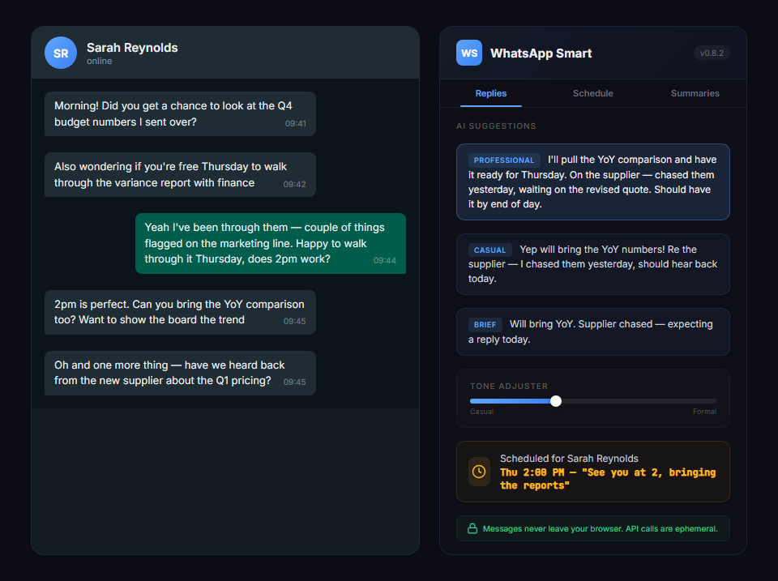
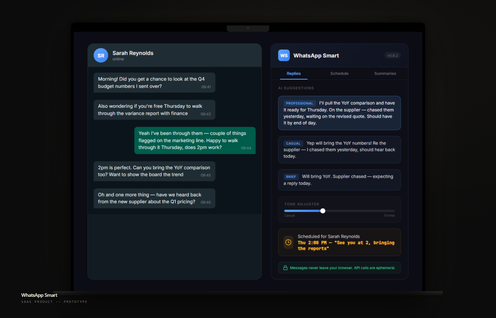

Projects / Chrome extension
WhatsApp Smart.
Prototype, never launched
I wanted to schedule a birthday message for midnight, and WhatsApp couldn't. So I built a Chrome extension that adds scheduling, AI replies, tone adjustment and group summaries. Messages stay in the browser unless you send one to the AI.
The problem
The missing layerWhatsApp's own scheduling, added in early 2026, is single-message only with no recurring option. Busy group chats pile up unread, and nothing helps with replies. Every third-party tool in this space targets businesses running customer support through the WhatsApp Business API. Personal users got left behind.
The extension


How it works
Three layers, local firstYou open WhatsApp Web and the extension is already there: a small toolbar next to the compose box with AI suggestions, a tone adjuster and a schedule button. Message access comes from an open-source WhatsApp Web API library, not brittle DOM scraping. No server required for core features. No sign-up.
- In the pageA content script spots WhatsApp Web with a MutationObserver and mounts a React 19 UI of 54 components in shadow DOM, talking to the page through a postMessage bridge.
- In the extensionA 1,400-line background worker runs the scheduler and send queue on Chrome Alarms, with retries and 3 to 10 second gaps between batch sends. All user data stays in local storage.
- Outside, optionalClaude, Haiku for speed and Sonnet for quality, with your own key or through a small Hono proxy. Upstash Redis keeps server-side schedules and push subscriptions for when Chrome is closed.
What it does
Eleven features- Smart schedulingOne-off or recurring messages, per-contact office hours so nothing fires at 3am, staggered batch sending.
- AI reply suggestionsReads the chat context and suggests three replies instantly. Learns your emoji habits and tone.
- Tone adjusterDraft quickly, then rewrite as formal, casual or professional with one click.
- Group chat summary30+ unread messages become structured bullets: decisions, assignees, deadlines.
- Undo sendA five-second countdown intercepts every message before it hits WhatsApp's servers.
- Follow-up remindersFlag messages to bounce back later; keyword alerts for terms like "urgent" or "deadline".
- Privacy firstAll data in local Chrome storage. No sign-up. Messages stay in the browser; only text you send to the AI leaves it, and those prompts are not stored.
What went wrong
Built on someone else's pageThe whole extension sits on top of WhatsApp Web's own HTML. It reads that page and drives it, and WhatsApp can change it whenever they like without telling anyone. One update on their side could break sending overnight. I can't unit-test my way out of it either, because the code under test depends on markup I don't own. The spec logs it as known issue one.
Stack
It never shipped. It stays on the list for the engineering.
Other projects
| Ref | Project | Summary | Status |
|---|---|---|---|
| 01 | OpsPilot | The AI that answers my messages: 6,124+ documents, live finance data, one-click approval. | Production |
| 02 | Trading Bot | Four AI agents that veto my trades. 115+ sessions, zero impulsive trades let through. | Paper trading |
| 03 | Uni-Nation Digital | Website, inventory PWA and Hindi voice stock entry for the family fabric business. | Being repaired |
| 05 | SCS Cockpit | The study engine I built for my own CIMA Strategic Case Study. I passed. | Retired, job done |